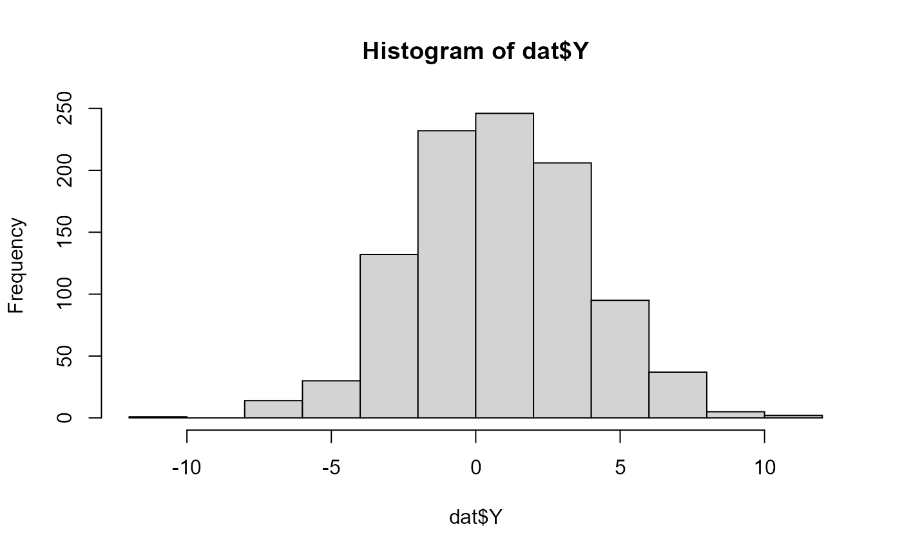

06_Continuous.RmdReview and run the code below to better understand the data distribution.
library(SPR)
library(MASS)
N = 1000 #this should be divisible by however many groups you use!
number.groups <- 2
number.timepoints <- 1
#set.seed(2182021)
dat <- data.frame(
'USUBJID' = rep(paste0('Subject_', formatC(1:N, width = 4, flag = '0')), length.out= N*number.timepoints),
'Group' = rep(paste0('Group_', 1:number.groups), length.out = N*number.timepoints),
'Y_comp' = rep(NA, N*number.timepoints),
#'Bio' = rep(rnorm(N, mean = 0, sd = 1), number.timepoints),
'Time' = rep(paste0('Time_', 1:number.timepoints), each = N),
stringsAsFactors=F)
# Design Matrix
X <- model.matrix( ~ Group , data = dat)
Beta <- matrix(0, nrow = ncol(X), dimnames=list(colnames(X), 'param'))
Beta[] <- c(0.2, 1)
sigma2 <- 9
# Parameters:
XB <- X %*% Beta
dat$XB <- as.vector(XB)
error <- rnorm(n = N, mean = 0, sd = sqrt(sigma2))
dat$Y <- dat$XB + error
# check
hist(dat$Y)
aggregate(Y ~ 1, FUN = mean, data = dat)
#> Y
#> 1 0.7271356
aggregate(Y ~ Group, FUN = mean, data = dat)
#> Group Y
#> 1 Group_1 0.2282061
#> 2 Group_2 1.2260651
aggregate(Y ~ Group, FUN = var, data = dat)
#> Group Y
#> 1 Group_1 8.892261
#> 2 Group_2 9.022253
# Model?
mod <-lm(Y ~ Group, data = dat)
summary(mod)
#>
#> Call:
#> lm(formula = Y ~ Group, data = dat)
#>
#> Residuals:
#> Min 1Q Median 3Q Max
#> -10.2360 -2.0098 0.0225 2.0076 10.6367
#>
#> Coefficients:
#> Estimate Std. Error t value Pr(>|t|)
#> (Intercept) 0.2282 0.1338 1.705 0.0885 .
#> GroupGroup_2 0.9979 0.1893 5.272 1.66e-07 ***
#> ---
#> Signif. codes: 0 '***' 0.001 '**' 0.01 '*' 0.05 '.' 0.1 ' ' 1
#>
#> Residual standard error: 2.993 on 998 degrees of freedom
#> Multiple R-squared: 0.02709, Adjusted R-squared: 0.02612
#> F-statistic: 27.79 on 1 and 998 DF, p-value: 1.657e-07
summary(mod)$sigma
#> [1] 2.992868
# g2g
This is helpful because it shows you the likelihood
vP <- c('b0' = 0.2, 'b1' = 1)
Normal_loglike <- function(vP, dat){
Beta.hat <- vP[c('b0', 'b1')]
Beta.hat <- matrix(Beta.hat, ncol = 1)
X <- model.matrix( ~ Group , data = dat)
Y.hat <- X %*% Beta.hat
SSE <- sum((Y.hat - dat$Y)^2)
return(SSE)
}
# optimize
vP <- c('b0' = 0.2, 'b1' = 1)
out <- optim(par = vP, fn = Normal_loglike, method = 'BFGS', dat = dat)
# Use Beta.hat to estimate the sigma:
Beta.hat <- out$par
Beta.hat <- matrix(Beta.hat, ncol = 1)
X <- model.matrix( ~ Group , data = dat)
Y.hat <- X %*% Beta.hat
sigma2.hat <- sum((Y.hat - dat$Y)^2)/(N-2) # N-p-1, where p is number of predictors
# Compare observed vs predicted:
mean(Y.hat)
#> [1] 0.7271356
mean(dat$Y)
#> [1] 0.7271356
# Compare parameter estimates:
cbind(
'Gen param' = c(Beta, sigma2),
'Custom Function' = c(out$par, sigma2.hat),
'R package' = c(coef(mod), summary(mod)$sigma^2)
)
#> Gen param Custom Function R package
#> b0 0.2 0.2282061 0.2282061
#> b1 1.0 0.9978590 0.9978590
#> 9.0 8.9572574 8.9572574